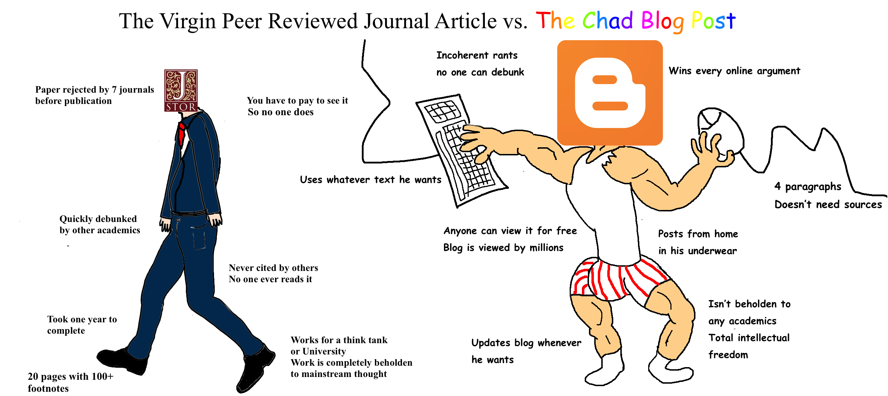

It is volume V of one weird book: 0 1 2 3 4
it is all not always anything more than a draft, read at your own risk.
That fourth volume ends as if would end if I died in the end, one thought in front of the other.
I was going to speak of Λ as ^
check this out:
all (?) isn't it o? but I spoke of a being in the same group as å (because none of them palatalizes)
ball bill bull (bell is probably in the g group (It's not ready to be read, why g? "in the ball group" was to be here, or how does it relate to kesler? I cannot understand this part myself, and I'm shocked by that a little) so dare I say could kesler's assumption of letters having one(?) to five(?) semantic meanings it can take in different words, dare I say, correct? That was a good classification of language by semantics, it was an awesome work I read in the 90s I think, though I put it away when he began building his lexics, because I wanted to make it myself, independently, so I could compare my findings to his dictionary. And now it seems I can do it:
ал
бал
вал вёл вил (you see how raw this stuff is, I can add and add, and it's only russian)
гол гул (гул как гудеть и гул как гулять, гудеть иногда синоним гуляти)
дол дал дел
ел
ёл*?
жил
знал*?
ил
кал
лил
мыл
ныл
о*? all
пал пел пил
рыл
ссал
тел*?
ул*?
ф*?
х*?
цел
ч*?
шёл шил шаль
щ*?
юл?:
russian language supports it way worse than english, now check this out:
all (? same as o? upd: no, look further)
bell bill ball bull bail? (bail is not far from bill maybe)
cell (g sent chill into this group)
deal
el eel (? same as a, could be later than the triple syllabary of all kinds of bcd)
fall feel (fel was in my notebook, and it told to compare f & h of fell hell and feel heal? Idunno)
goal gel (gel was in my notebook, not here, but they both cover both forms of g)
hill hell hall
ill eel
(jill was the only example I gave in the notebook, but now I think gel is from here)
kill
lull(?)
mall mill mule
ni(hi)l nul(?)
all (? same as a, are vowels even in this game? ain'g ill out of the primal mode)
owl (I didn't notice owl here, maybe because that was night and now it's noon)
pill peel peal pull pall
quill!
real reel role? rail? rule!
seal sell sail?
teal? tale? tool! tall! tell!
u(?_) notebook offers wool
veal vail?
wall well will wool wail?
x excel?
y yell
z zeal
With these two raw aſf but neverthe less dictionaries to what kessler theorized and thus to Kessler's:.
but no, let some ai (artificial or augmented intelligence) does it afterwards, because I tried to find алый in his Ъ groups, and I couldn't find it. I would place it whether in Ъ6 next to fire (look at the very end of the book to see his rationalization of fire being with Я) or to Ъ18 next to ярый (яркий, эти группы связаны и не понятно умышленно или случайно, и не известно что страшней, ууууу)
so I put a mirror to his book at that previous ' in case the link in the one before it dies, because it's an outstanding work, whether it is correct or not, and it would be a bummer if it's lost, because it could be the biggest loss in that Fomenko scandal, when some historic works were made by mathematician and published in the most prominent soviet university and later historic department labelled them as pseudoscientific (look who's talking!) but failing to attach any constructive criticism to his work for at least three years (I was watching that situation closely) maybe even five (so long ago it was, that my memory is not sure about this digit in it) and only after let's say 3 to 5 years an engineer or a mathematician (memory also doubts what version is true) began public intellectual battle with Fomenko, and I wasn't able to follow their conversation, because whether their argumentations required some level of competence I didn't feel like achieving educating myself, or just the interest to this situation faded with time, because what the situation taught me is that fuck academia, those clerks don't know shit, so I was liberated to begin my work from scratch without leaning onto the academia speers. And the same rationalization could be beyond Kessler's attempt to group all the dictionary into lesser semantic groups without bringing reconstructed forms and structures made before them (they can always be wrong, and me personally, I don't believe in established language families, because of how russian and japanese are similar. If I want to preserve the family structure which is wide accepted today, I should attach japanese to slavic languages, but it would be so insane and actually why not to combine chinese to english because of some similarities? wo & we and short words and simple grammar, that probably were the two huge branches we initially were on, but cross-culture communications made russian drift further from japanese and closer to english, just as japanese drifted towards chinese, so it's not a tree, but a jar or aminoacids the way I imagine it.
But after saying all that I decide to not dig into his theory until I develop my own dictionary and let it be better than his, with much less semantic clasters.
I dare to mention Fomenko more and more explicitly in these texts probably because I grew more hostile towards academia, but also because a friend of mine mentioned him as a freak not worth mentioning and I asked him why exactly doesn't he like what he said, and I couldn't receive a coherent answer to that, he simply accepted that academia is always right. Even though history of science here and again prove otherwise.
So about the freaks, we should distinguish between them: there are obvious freaks like Chudinov who's probably there to smear some authentic artifacts like that Bornholm alphabet runestone; then there are those freaks who are whether fools or trolls like Oreshkin; then there are some clinically insane freaks like Lukashevich. Those evaluations are purely subjective, but they allow to understand where I stand.
The other group of linguistic freaks are Vashkevich and Dragunkin, who pull some outrageous conclusions out of their observations, but the observations itself may be rather useful for those who learn foreign languages (Vashkevich compare arabic words to greek, russian and whatever else, I didn't even read him. Dragunkin compares russian to japanese and to english. All that can be incredibly useful as mnemonic tools)
Fomenko also belongs to that second group of semi-correct scientific marginals, and the most prominent reason of his theories not being taken serious (I'm not even talking of them being accepted) is that he doesn't have historian education. But seriously, if prominent mathematicians use some previously published tools and models to the structure of historic data, that alone demands a proper outlook from scientific society, which didn't happen when he was relatively alright, and now there's even less chance of that being done properly, for that guy whether went trolling or was sold out or whatver happened to him, that the level of his scientific thought dropped from mathematical modelling to mere speculations. Or it could be because it's easier to notice what is wrong with the state of affair happening at the moment, but one has ever-growing tendency to fall short when (s)he tries to describe as it was or what's supposed to be done in the future. Me myself, I'm definitely in that second group of freaks, and some of my assumptions are probably dead wrong, but those main elements of this theory the structures and some other findings may persist and sustain. And I actually except some academic recognition in the following three years or so. Even though I was recently told that Ignaz Semmelweis was disregarded for awhile because MDs are psychopaths: see Semmelweis effect. Gregor Mendel's founding of genetics was completely ignored for thirty something years I began that path believing that anything can be achieved in mere ten years, also they say history goes faster than before, so I expect it to take society ten years to recognize what it's all about. And it's been over six years now since I went public, so..
An awesome stuff waves of the internets bring my way

Yeah, no use to reform the academia, leave it completely, create your own castle on clearer spot and firmer ground.
My next task on this way is to create some information resource, where all ALL the information on the planet earth.
I will be in freaky nebulas, because I refered to people standart academia doesn't dare to mention. I will be their weak bond to some obscure linguistics of more academic figures, with all the respect academic, my punk rock is justified, but as I said in the very beginning, some of them are alright, some of them are very alright, but i don't know any very alright individual in linguistics, even myself is too weird to be a king, and above whom? fuck them, gosh. But they milk go-t, but insane militaries milk the goat much better, it doesn' make me want' to participate in their deeds. But what if we make military actions agains us ineffective? they are not interested, because they want to reserve the possibility to successfully bomb their own population if they must, for themselves. or am I just way too cynical?
See how halaḥam follow the tradition I've seen first in Arabic vowel diacritics:
unlike philippines writing system make it, here u gets a high mark, and i gets a low mark, which would be more natural for me as a child (elephant is high, so why his sound is low? and mouse is visa versa)


But here we see why it could be: in philippines the order is AIU, and this one is the other order, and it makes these writing systems related to ogham of all things, which could be related to some berber ancients. The following research is needed, and it's time to add english version of colored ge'ez to vol.1.
But I only added the text version, maybe some day will remake it into english:
- አ ቡ ጊ ዳ ሄ ው ዞ — а бу ги да хе вы зо
- በ ጉ ዲ ሃ ዌ ዝ ዦ — бэ гу ди ха ве зы жо
- ገ ዱ ሂ ዋ ዜ ዥ ሖ — гэ ду хи ва зе жы хо
- ደ ሁ ዊ ዛ ዤ ሕ ጦ — дэ ху ви за же хы то
- ሀ ዉ ዚ ዣ ሔ ጥ ጮ — хэ ву зи жа хе ты чо
- ወ ዙ ዢ ሓ ጤ ጭ ዮ — вэ зу жи ха те чы йо
- ዘ ዡ ሒ ጣ ጬ ይ ኮ — зэ жу хи та че йы ко
- ዠ ሑ ጢ ጫ ዬ ክ ኾ — жэ ху ти ча йе кы хо
- ሐ ጡ ጪ ያ ኬ ኽ ሎ — хэ ту чи йа ке хы ло
- ጠ ጩ ዪ ካ ኼ ል ሞ — тэ чу йи ка хе лы мо
- ጨ ዩ ኪ ኻ ሌ ም ኖ — чэ йу ки ха ле мы но
- የ ኩ ኺ ላ ሜ ን ኞ — йэ ку хи ля ме ны нё
- ከ ኹ ሊ ማ ኔ ኝ ሶ — кэ ху ли ма не ны со
- ኸ ሉ ሚ ና ኜ ስ ሾ — хэ лю ми на не сы шо
- ለ ሙ ኒ ኛ ሴ ሽ ዖ — лэ му ни ня се шы ъо
- መ ኑ ኚ ሳ ሼ ዕ ፎ — мэ ну ни са ше ъы фо
- ነ ኙ ሲ ሻ ዔ ፍ ጾ — нэ ню си ша ъэ фы цо
- ኘ ሱ ሺ ዓ ፌ ጽ ቆ — не су ши ъа фе цы ко
- ሰ ሹ ዒ ፋ ጼ ቅ ሮ — сэ шу ъи фа це кы ро
- ሸ ዑ ፊ ጻ ቄ ር ሦ — шэ ъу фи ца ке ры со
- ዐ ፉ ጺ ቃ ሬ ሥ ቶ — э фу ци ка ре сы то
- ፈ ጹ ቂ ራ ሤ ት ቾ — фэ цу ки ра се ты чо
- ጸ ቁ ሪ ሣ ቴ ች ኆ — цэ ку ри са те чы хо
- ቀ ሩ ሢ ታ ቼ ኅ ጶ — кэ ру си та че хы по
- ረ ሡ ቲ ቻ ኄ ጵ ፆ — рэ су ти ча хе пы цо
- ሠ ቱ ቺ ኃ ጴ ፅ ፖ — сэ ту чи ха пе цы по
- ተ ቹ ኂ ጳ ፄ ፕ ጆ — тэ чу хи па це пы джо
- ቸ ኁ ጲ ፃ ፔ ጅ ኦ — чэ ху пи ца пе джы ъо
- ኀ ጱ ፂ ፓ ጄ እ ቦ — хэ пу ци па дже ъы бо
- ጰ ፁ ፒ ጃ ኤ ብ ጎ — пэ цу пи джа ъэ бы го
- ፀ ፑ ጂ ኣ ቤ ግ ዶ — цэ пу джи ъа бе гы до
- ፐ ጁ ኢ ባ ጌ ድ ሆ — пэ джу ъи ба ге ды хо
- ጀ ኡ ቢ ጋ ዴ ህ ዎ — джэ ъу би га де хы во
(that piece I copy-pasted from vol.1 where I just put it. well, at least for those who missed this edition, because he reads vol.2 or 3 when I update vol.1
And more than that to speak more about it not overcomplicating vol.1 with this autism:
ሀ and በ oppose each other as a opposes б if you can see it. and we were talking of b reflecting d this way, but a & d are probably historically the same letter, then e is c, o is ?, u is v=в=b, and we return to A reflecting V which is D reflecting B, I hope you follow this.
And suddenly.. halaḥam, ogham (both has u's before i's)
ham is a rude person in russian (хам)
so does it make cultures that let i's (thin people, ladies(?)) front more civilized? than those where big ones go first because it's better not to stand on their way: if they fall on you it may be a naughty knock-out. only guessing, hardly scientific is this guess, but hypotheses do belong scientific literature, I already said why, they can be proven or disproven by the reader. They also remind the reader, that some scientific information is not valid, even when it is displayed arrogantly certainly it can be false or wrong.
I speak of someting important and on the same breath I speak of something hardly right or important, at least I can put it into grey. and it was here before I copypasted that vol.1 thing + its autism, so it's not on the same breath
ሀ (a) turning into ሁ (u) in its diacritic form could be an attempt to notify u when it comes out of a and into u as it is bሀs, but abሁse. or it could be some other story, but actually I came here to say that in this ሀ both a & u meet, it could be from those time when A & U wasn't separated, but that sets an important question of how would people distinguish speech if so many now different things were the same.
I was looking for a languae where JK would stand for Jesus Christ, and it could be Norwegian: Jesus Kristus
The beginning of this volume will always want me to do something else, so embarrasing it is.
But I keep on digging, because sometimes some treasures appear.
I also write in my notebooks (another portion of scans is coming in several months only, when the summer comes, I don't want to go there before that)
Russian orthography is made up by the germans (and etymology too) yet
if we write russian word for blue not the way they tell us, but the way we speak it, it's синии, сини is also that word (a short form of it) thus that reminds very much egyptian 𓏭 and 𓏼 standing in egyptian grammar for a suffix of plural form.
That made me think that what if russian has roots to those ancient languages of the past, and it doesn't mean aothers don't. And I know we all do, we relate them one way or another, and what if it's so fit we can write russian in it and read it rather easily because the things there sound like ours? What if egyptian hieroglyphs could be read in oter cultures by their scolars who could read it in their own language? I can test it right here, let's find how blue is in egyptian, and if it's near s, it is interesting.
http://hieroglyphs.net doesn't know neither blue nor green, but it knows man, it's s, and it doesn't help.
and for whatever reason in reads king not how it's written, because it's literally satan:

𓇓 is sw (see biliteral in vol.1)
Dictionary of Middle Egyptian by Paul Dickson (2006) (Gardiner list) returns irtyw (𓇋𓂋𓄿.. and I don't know how to write what falllows (falls later, follows, it's som folk etymology alright, I am sorta poet, but I'm better than those) so I don't know why a of the 𓄿 became tiw, but if ir is some plant, than both ira and irtыв could be genetivus suffixes, but as I said I cannot write further, so I screenshot:

while I was trying to find what I believe to be a berry, I found a weird sign I saw somewhere else:
𓊖 looks like one of phaestos disk's so whether the forger took this peculiar sign from egyptian, or that disk is authentic script not far from egyptian (then we have to compare these two, even though I posted someone showing how phaestos disk is a fraud, but I didn't read into that myself, so I can keep my intellectual freedom on this subject)
I would say 𓂂 is that "berry", but it is told to be the pupil of the eye of Horus or wḏꜣt (literally “Intact One”)_____The series of Egyptian fractional measures of grain would then be either directly based on the pieces of the eye or would have eventually come to be interpreted as such.
neither 𓂂𓏤 nor 𓂂𓏥 nor 𓏷𓏤 nor 𓏷𓏥 combine into that glyph in the dictionary, which is probably 𓏦
but that ball is really small. whether there's the glyph I didn't notice, or (either way) fonts just can't do it yet.
Is pistol pestle? (if somebody who doesn't know what it is takes it by the barrel to hit you with the grip, it gives you advantage if can grasp the grip) but it's only guess, why should I spread this poetry? is poetry pottery? I seriously doubt it, but as a rhyme it's a charming chime, not sure about this one though.
once again about tolkien:
He's littered the pool of linguistic information with his invented writing systems.
The only writing system he took without much change (but to which he only made several weird additions) was nordic runes Nazi Germany was researching the most. And of course those runes were used by the bad guys (I'm speaking of Uruk Runes. Cyrth was much more different than the anglo saxon runes, and I don't know if calling some nation dwarves is actually flattering)
But when some Norwegian journalist noticed that, Tolkien cared enough to try to refute it with his response about him not having a slightest intention to have such parallels in mind, that he's apolitical and blablabla, that he's very offended by that interpretation of his work (as if it was much more than mere propaganda)
> In the Foreword to the revised edition of The Lord of the Rings, Tolkien cautioned strongly against viewing it as an allegory, saying that he disliked allegory himself. Furthermore, according to his own claims, Tolkien denounced Hitler, Nazi beliefs, "race-doctrine" and apartheid and praised the Jews, calling them a "gifted people".
Jews are gifted people alright, but even not speaking of the nature of that gift, that guy licks their asses for politically correct reasons, and he is successful, so maybe someone will learn from his example. But as for that work it would be a false note, I sympathize them and I dare I say it, fear them, even that, but that's another reason for me to be brave and honest, also because as Camus righteously said, nothing is more despicable than respect based on fear.
And though I lack that very portion of respect, I still offer some ambiadvantageous solutions, because it's the most rational thing to do in this situation. Hate the sin, not the sinner, remember?
People have little to no responsibility for whether genome they were born with or the culture they were plunged into. But both factors can be improved by genetic therapies and friendly counteractions.
Do you call such rants friendly? Yes, I do, honesty is friendly. Just as banters, they help us all evolve. Even when it hurts, its' medicinal, really.
Only now have I realized why does this work sound antisemitic (4снад screenshot was only natural) and that's the notion that semitic linguistic, the very centre of it, rots. Even though I
show that every other branch is not much better (I don't, I'm an antisemite, because many jews will not like that. Then let's not notice it. keep it in mind, but at least hide it from a plain sight, they will survive, help them) and I was brainwashed by some jew saying "antisemite as every great russian writer" Zionists support antisemitism. And they're white. overcompensate.
еду ходу езжу хожу еду хочу ищу ещё нахожу найду на еду
здесь предполагается несколько этимологий, но без более строгого научного анализа это всё не более чем поэзия. и это не связано с основными темами этой работы, они-то вполне научны, более научны чем большея часть лингвистических трактатов что мне приходилось читать.
Here's a funny thing I'm not sure I've shown you, even though I probably showed it somewhere, never saw anybody got it, because it's more complex than the idea itself and I don't know it was noticed much:
(greek axial completes latin axial)
I probably should turn it all into some imageboards threads so discussion happens there and is brought in here in a form of links and mirrors. Here comes a proper one for some /po/ or /pol/:
I just realized that I'm a commie faggot myself: I don't patent and enterprise (вводи цену) but instead I roam around and share this idea. Don't you know what those swine in hudson hawk said? Don't share! That's the other form of ideology, the opposite one. Yet I have to research that economic advice. It was a caricature filmed by hollywood for proletariate, those shvonders are truly insane, but don't mention it. Suddenly it's a good thing almost nobody reads this crap. As with that kitten: его не гладили, и он начал убивать. Стал лучше? Меня лучше не хвалить, тогда я ещё лучше?:
So I stew it here and I return to it to share, and I edit the darnel out.
Or I should build or find. I should find the resource, built to
Дядя дима всех подымит, передымит, выдумает.
думать и дымить синонимы? задумался задымился? я дую чтобы думать. Дую. о, как древни эти затабуированные понятия. Благодарю моим учителям кто передал мне эти дивные слова.
Back to that J is L hermesy,
Here a drunk mason claims that jewish god is Lucifer, and where I took I sent this response:
Sombody didn't make his homework properly and got it all wrong.and looking to support it with some good quote, I found this interesting lady.
Jesus and Lucifer is probably the same figure.
The jewish god though is the satan (as Book of Revelation righteously repeats at least twice)
In early christianity (aka gnosticism) Jesus was allegorically reprsented as a snake. And there are some ancient images, on coins for example with snake on a cross.
Masonry seems to be some gnostic school of whatever, though I'm not sure we really need this mumbo-jumbo for anything else other than to comprehend the rationale of those top-rank religious pricks. They'd rather have you not knowing the difference between good and evil, for being ignorant you would obey much easier and with less of uncomfortable quesions.
Also many satanists borrowed the Lucifer's image from his enemies, who are the Devils themselves (Mary'ed people, if I understand it right that Devil is suffixed form of Deva and Evil is of Eve, but of course it all seems pretty relativistic today, even though women and evil are on the same side in Tai Chi, but probably because when we're in love our hormones drive us dement (which could be a suffixed form of demon: mad is beshen in russian, bes is a demon) but that hormone disbalance's our problem, gals shouldn't be held responsible, that would be some catholic-tier satanism, and it makes the world uglier: a good excuse for ugly muslims who hate beauty, because Lucifer is told to be the prettiest of all the angels and the most beloved of that heavenly king who is a satan in palms of whom this world is until Esus comes back for good, but that reference make it all even more complicated, some ancient cults with their savage barbarian traditions, we should't be reconstructing those stages of our society, maybe only to look at it and laugh, because by laugh we get rid of the past)
Also both Jesus and Lucifer bear the title of Moring Star (the very last plot-twist of the new testament) and so on.
and that video has this comment:
and I had to give my response:
What if S-n is the false god, the one who doesn't care for our prayers. And the one we have to tend is the E-h
Then Elohim could stand for planets.
It gets even more complicated when we notice that bothe Snake and Earth in russian are З-я (змея & земля [zmeja & zemlja]) and 3 looks like 3, and it's the third rock from sun (though here it could be some apophenia, but a funny one, but let's go the full circle: third sounds like seth, who was not only satan but also the third son of some biblical figure, so the trick of this rite is that we should realy take it easy because we're not capable of distinguishing gods from devils, because both are smarter than we're and can deceive us easily if they must) So I'd take good care of the planet and wouldn't bury nuclear waste in the sun either.
Informational singularity is probably here, according to how fast information travels. It was just yesterday when I found that I probably turned a good guy named proteineinsaider insane with my spheric capsule thing. Or maybe he just looks this way, because his poor drawing skills and with his being a lady maybe, otherwise why'd he use so much pink. That would explain it a lot. I also foud some AnyaLove000001 who is whether that proteineinsaider or a huge fan of his (her first posting is years after it appeared at 2ch, but it literally uses tag моё for something very similar to what (s)he posted at 2ch and later she uses proteineinsaider's work with title of С просторов интернета на тему вечной автономной капсулы, as if she knew about it because somebody in the comments told her about it, but I suppose it's for conspiracy (для конспирации, a disguise) but why I mention it here is that I should be careful with all this information, because it can lead people further out of balance. I wish that lady well. And I will probably contact her to use her in our documentary (a friend from tv is making a film with me and some other weird guys, and I openly highjack his project into a direction he will also like) so that lady who tells that Jesus is Lucifer published it probably a year ago (according to the comments) and she could also be influenced by me, so at this point I should be careful with references, not to bring some circular references. Either way, references never proved anything, no matter how important they become in contemporary academia (which is still a bunch of faggots, pun intended)
And just before that J=L thing I saw that music video (Kelli Ali's Hunter)
and here's the comment I'm not sure I should post or not (I will)
: seconds in and I've already realized that those skulls could be representing female figures (it became more obvious when I explored that rostral opening) and this hypothesis can be confirmed if some terracotta used to complete the sculpture, or refuted if such artifacts are never found. A decade ago I noticed that some terracotta crucifices look pretty much like bovine skulls and now this.
Back to qipu:

If this image demonstrates all the possible knots of it, I'd hypothesize that those are whether three mothers of A M S or A M T or A B C
or three main syllables of B- G- D-
position Б is probably B
position А is probably A (because it's the simplest letter in Ogham and Tifinagh)
I recently compared Ogham to Halaham, in case ham is the stem. But now I look at ogh and agh)
position В is probably the Ш or T or D or whatever lingual, just because I feel so, maybe because of ugharitic too, but only it's ugaritic, and this ugh cannot relate to those ogh and agh, because it stands for nation, not writing system, and I have to research if that name is authentic. but either way, that's ot the way to procede with my research, because this shit is probably apophenic and either way to vague to get firm ground.
did I speak that post is постой, стоянка, стойло, лошадей где меняли, не на переправе, там паром
или где сторожили? где постовые кони, стожло = сторожло? постой пост погранцы гонцы
Another blogk post on music:
Russian band Нуки can be transliterated as Noockie, if we want to make a magic four-letter name (кино, cure, abba) into seven-lettern name (madonna, michael jackson)
but it shows how it's similar to russians, which is rooskie in russian (c is always read as in cinema in russian, like s) rookie is новичок, новобранец, рекрут, n instead of r makes it new-russians, as if n is another r, Н another R, h ~ R, п looks exactly like n in cursive, п is p in lating, p is r in russian. We are noockie, but it looks like носки (socks) and many russian surnameds end на sky.
And ruckie is probably
как может N быть Т это понятно, обе язычны, но как мог П оказаться в этой группе, Fart sound stands for No. N & V meet in ν
see how many cases of lingual and labial having met!
also m is both M & T, n is both N & P (looks like since N and M are invariants, and one is lingual, the other is labial, all the letters after them are their whispering invariants: but why not T to M & not P to N, but in reverse? if M and N are ivariants, then so is T & П, 3 & 2, both are пара, so what the difference.
I M N
O P T
seems right, the other half. the first one was (or is)
A B C
E F Г
dice are du? two dies? a pair of bones (one animal has exactly two of those bones used for divinations)
and initially it was not 6 digits per die, but only 4 (ctrlF vol.1 for ашички)
and because there were only 3 vowels... or could there be 4 vowels already when that divination appeared? then... one bone is left, the other right and... which is vowel which is consonant? or is it labial and lingual and vowels don't play here, they are for singing and from other culture or whatever.
Could common traits give birth to different notation languages? they shoure scould.
Ruck is чернь (rookie is probably related, as fookie would be related to fuck) which correlates to rus standing for village in latin. kievan rus is kievskaya oblast, skaya is the female form of -sky, thus both suffixes are fimininized, thus is y (which is ya) I (me(? thus the shourt form of that adjective
Some glagolythic for me to ponder on:
(the same I attached before, this time only the images I need, books should be with pictures)


I missed MSPaint so I found KolourPaint, it works well, like that one, maybe even better, but text cannot be copy-pasted when you still type it there. And now I cannot exit it directly, let's keep this drafty leaf there, for those who doesn't see it, it tells that glagolitic vowels are double forms of european, so he who invented it probably did it on purpose so someone who knows european and knows the keys can read it (thus it could be invented if not by kirl, by some other nationalist, I should be not biased, but based) I missed E: in glagolica it has not three strokes, but four (or not 1 but 2 depending on how you look at that)
and their ω looks like double ω.
And I don't know why that pdf cuts the M's balls, but in this form M also looks like double M, two inverted M's, doubleW:

And L looks like double lamed, so now I wouldn't be surprised if that was some later form of alphabet, fabricated by doubling the wide-known european ones, But what if other european alphabets just simplified this form? But where are archeologic evidence of the spread of glagolitic writing? In greek cursive δ looks like Ⰴ as it's written on the table below: (and in that first one with text on it)

And the following image shows how close Г is to В.
That's another example of c standing next to b in more than one sense.

G & D here look the opposite direction (in other fonts those are B & D)
and then g & d also do (when g is in other font)
but that g looks like closed y, and they are dialectal variants (way in gb is weg in nl)
I just noticed that alphabet can be divided into three parts:
Remember I quoted some guy who lives in the same city as me (but purely occasionally, unless accidently if some alien civilization sent a ray of mental information to our planet and it hit this spot.
Remember this?:
А Б В Г Д Е Ё Ж З И Й К Л М Н
О П Р С Т У Ф Х Ц Ч Ш Щ Ъ Ы Ь Э Ю Я
And I thought why would it divide not like palatalizing and not
(those change letters ga/gu & gi, ca/cu & ci, and so on, in russian they're almost all changed but that change is only mild palatalization)
And now I noticed:О П Р С Т У Ф Х Ц Ч Ш Щ Ъ Ы Ь Э Ю Я
And I thought why would it divide not like palatalizing and not
(those change letters ga/gu & gi, ca/cu & ci, and so on, in russian they're almost all changed but that change is only mild palatalization)
А Б В Г Д Е Ё Ж З
И Й К Л М Н
О П Р С Т У Ф Х Ц Ч Ш Щ Ъ Ы Ь Э Ю Я
O & У are in the same silent consonants category (r is r even when whispered, it doesn't have pair, unless L.
What if R was instead of k and k was the q
Then O is wispered A
and И is whistled A?
wisper with fart?
wistle with tall? (высоким тоном? но если это не повторяется в том, что у тагалогов и у арабов свист назван соответственно: у тагалога высокой, у
in свист there's the same wist as in wistle, thus tall is suffixed T, big in chinese-japanese is 大 which is often transliterated as da, but it's pronounced as ta (chinese will appear in alphabetic chart. 大 will be in the position of the T, several similar hieroglyphs may be presented as several words are presented in those other charts)
(golden foam notebook discussed + being crossed out - as if without - it's + by default, whether it's & or , and и and t? + looks like + to is and in japanese, and also ten, which is 十 ~ +
And when I checked http://classic.jisho.org/words?jap=to&eng=&dict=edict I found another interesting function of katakana (it's probably ingenous ainu writing system, and there was something else, I will figure that all out when I combine all the stones together (before that I have to transcribe all the notebooks)
ト 7th in a sequence denoted by the iroha system; 7th note in the diatonic scale (used in key names, etc.)
Iroha system... I thought there was many, but it seems like futhark it's pretty much the same, and as in futhark letters have numbered positions, and it works as musical notation, just as in latin alphabet, 7th letter is 7th note. so whether it was borrowed by japanese this way, or these parts of our cultures can lead to the prechristian ways of using writing systems, prehistoric actually, because all history before moses is kinda not allowed, I heard it from egyptologists, but I think it was Hancock, if he's accurate for your taste, but that claim is easily проверяемо, т.о. здесь он не более фрик чем Фоменко, потому что Фоменку я на пиздеже тоже не поймал. Допущения недостаточно обоснованные - может быть, но в ранних работах ему хватает спокойствия их довольно осторожно предлагать, и если в дальнейших работах он их подтверждает чем-то, а потому становится борзей, я даже не читал. я и читать не стал. но это и повод посмотреть и на себя со стороны и на рецензентов так же охуевающих.
What if bourgeois were hated by lumpenproleatariate because the words they chose for themselves is so difficult to write especially to those who are not very good at writing. Bourgeois probably used it as an additional filter to sort out some fraudsters pretending to be something they don't know even how to write properly. those boorjuas and poorjazz
А Б В Г Д Е Ё Ж З
И Й К Л М Н
О П Р С Т У Ф Х Ц Ч Ш Щ Ъ Ы Ь Э Ю Я
Would make some other sense in another form:
А Б В Г Д
Е Ё Ж З И Й К Л М Н
О П Р С Т У Ф Х Ц Ч Ш Щ Ъ Ы Ь Э Ю Я
Because ee = i and oo = u
Can Ж & З be coloured into blue of sonors (that sonors thing is from education, so not all of their ideas mislead me, this one is found to be useful in this thing, which wasn't found by me, I read it from someone else, links are in vol.3 where it's mentioned first.
Ж ~ J & З ~ E so that И claster could have begun even before H.
EFГHIJRLMN? (I'm sorry, I use the same colours for different purposes, If you followed the text it shouldn't be a problem for you)
Nah, O & У are two distinct lines
so should be E & I
but in runic and semitic alphabets there are only 4 lines (four vowels did they have? fifth was the V? It all reminds Lucifer being the fifth archangel, de V'll? deWill? deVille. you've got the point. eVe, de'Ve.
but where did that fifth vowel were? In hebrew it's F, and in russian vowel Ё stands at that place, but it doesn't make much sense, because why is E a form of A and thus Ё was the true E? but ЁЖЗ for a lign don't make more sense (lign is unconsciously written for line) than IJK or IKΞ
EFГHIJRLMN?
nevermind, back to lucifer. If it's Ё next to E, was E one of archangels who betraied Lucifer? For whatever reason I want to believe (believe, but not 100%) that the history of writing system is preserved in the mythology, especially since Sefer Yetzirah speaks about both judaic bible and alphbaetic elements.
If OU are whisper, EI is scream
low and high has other meaning: quiet and loud
and q is among whispering sounds, l is among screaming ones.
E could stand for Esus, and F is limp E, and Ё could be E with horns.
All the horns of the wicked also will I cut off; but the horns of the righteous shall be exalted.
and here I wanted to verify the translation but google's translator is probably aware of antisemitism so it doesn't translate those languages accurately:


whatever it all means. I hope those ai will tell us their stories some day.
E is not only Esus, but also El, and is it el = the? because ה = the.
It reflectls IK for Isus Kristos (in yiddish it's yoshke krist, in hebrew it's ישו and ש probably stands for shaitan, שטן because י and ו are the same as in יהוה
but I cannot find where IK are isa's initials, other than in amharic: እየሱስ ክርስቶስ iyesusi kirisitosi and in japanese: イエス・キリスト Iesu Kirisuto (but then again they teach that J is an invariant of I so IK = JK = JC
Is JK BC (Б-Г) but in scream or whistle?
Isn't JC possible to be read as geeze! cheese is holy, it doesn't rot as much as other food. it can be held relatively safely without being cooked, probably that's why in russian cheese is сыр, which could be short form of сырой (raw) and that could also explain why cheese with mold can be consumed and it's sold to the rich, probably that's a dairie's way to laugh at them, as niggers laugh at them drinking copi luwak, as who knows what culinary traditions could take roots in deceit: tobacco was used for driving evil spirits away, the pipe of peace was probably using something way more shamanic, and always well, nobody should have died of such pipe, otherwise it could be the only peace they'd get. Cannabis seem to be that megic pipe that doesn't make it worse. Even though I saw cases of panic under the influence of it, but nodody died or fell sick afterwards.
excuse such rants, please, my chaos wants to be manifested too, otherwise it's hard to the good pieces to break though. it was always the case, that seems to be how my head works (at least its poetic side)
I am going to keep these rants, because I feel responsible to resolve the ancient outrageous statements I already made with who knows maybe even more outrageous ones, who knows, I hope.. I don't know what I hope, I don't hope nothing not to force my hand, I'm curius myself, ucucius, oucoureous ouh courageous! curage cures. curiousity is of a courageous, graceous? probably, let's check:
grape courape? nope
graphic couraphic? not really
гром courome? no!
but let's do it in reverse:
court grt government! гурт, грот, грэйт, грета? growta (ростит тебя как капитал, чтоб работал и им деньги приносил, но я шаман я помогаю тем что во круг меня работать и деньги приносить,
IFBW is intuitively translated as I Fuck Black (Big? second guess) Women(Woman is second guess)
(see the variant after you guess one yourself, it's in the page above)
Even though it's I Feed Both Wolves.
(I've decided to hide (fade) the variants into white, for your pleasure. my honour.
honor is гонор in russian and it's temper, not hoor.
but temper is next to honor, thus that typo above is of no value: whores are the opposite of гонор, мэйби онли ту зэя хасбандс, but actually whore is no honour, honor ~is~ not a whore, bitch has some honour, but I don't like bitches, but I do not like whore either, in every woman I find some flaw not to be disturbed from my magical science oh magnificient science, looks what I'm doing, probably wouldn't be able to do if my cock was sucked. But I never really tried fat women, oh they're so easy to dismiss, fat looked ugly to me as to many other guys, only recently have I began looking at their plump cunts as when they're in clothes, I only avert when I imagine their bellies bigger than their tits, it's as if I fuck some fat dude, I don't mind titless gals really, even though pedoa is taboo to me, but if they're slim I watched a lot of fashion magazines to find bonies attractive af. Should I design clothes for fatsos to fuck? Should I pretend to be gay not to sleep with my models or should I claim my asexuality and then should I demand my A in their lgbt quiz or should I sustain from their озабоченного community?
I guess it will be a bridge for h to join their party, and what other reasons for heroin addicts to join gay community if not to sell drugs? to make monety (what a magnificient typo for mone!@Y) монетой,? из ит уот зыс нью тайпо теллс? I was talking of heterosexuals, but if gay is g, straight is S, and that is gay af. (some gay voice "you're the bottom" and it all relies to that socrates.html)
Back to that IFBW (and that the name for one of my bands, because they all may differ) and it a little surprises me that it's as if I tried to say I'm, but mentioned all the other labials instead (is V ~ N ~ M?)
And I was also surprised to notice, that Feed and Fuck are somewhat similar; Both is similar to Black, because if I fuck the blacks, I do fuck the whites, whites are more valuable where I live; (I read that ; was used to be a ?, but here it's a form of ,) Women and Wolves, or Wolverines (are those two species misinterpreted as ВорОны (Crows) and ВОроны (Ravens) in russian?)
And I tried to decipher some wide-known abbreviatours with that formula, and the first I found was FBI, which I immediately translated as Fuck Bad Individuals (actually the first guess was Fuck Black Individuals, but I thought that it's a racist misconception to call them blacks, because they're actually different shades of brown, but brown also begins with B, so that could be where I hit the core of that: B is yin, T(D) is yang, both black and bad are yin features, afaik) far isn't fuck or feed.. We'll wait for other hypothetic bandnames to find other basal meanings of cool official abbreviatures)
That IFBW thing appeared (in this terms, the concept is at least a couple of years old, and the concept of which it's a part of is much more ancient decision to keep neutrality in the battle between angels and demons, trying to negotiate peace between the parties for mutual benefits) after I met Nuki, and realized that they're pretty jewish, and АХС are the opposite (even though some people say Hitler was a jew) and good thing is I realized they don't need money (the jews have all the money in the world) so I will keep on donating to AXC only, to avoid being a glore.. I mean, glory-hunter, and here it seems how the words appear: a bro is a huge football fan, and he went to some game in London, where he found the term глоры, as if he was told "those are glores we don't like them" probably he was told "those are glory hunters", but he considered hunters be some sort of bastards, as if glory is the term per so, because -y is how you make plural in russian. (somehow some time ago I found the term glors or glores, as if it was shortened for glory-hunters, so I searched for glory-hunters and found many times urbandictionary saying it's those fans who always support the winning team, and only some gothic whores (goth-loli-whores?) for glores (non for glors)
Or I found it because глоры is a term in russian football fans terminology: has brother found it there? or have he sew it there? nah, 592 million cases of глор in google. Or is it a common mistake of the foreigners? probably so, or urbandictionary doesn't register brittish slang (I tried a few brit.slang.terms I know and it seems it knows)
that academia.edu thing, I like them: they just recommended me to read The White Goddess I wanted to do for such a long time, and now I see it has references to King Jesus I probably stumbled upon trying to read it the last time. Now I ctrlFed it for alphabet, and try it out by yourself, I haven't read the book yet (download pdf with text. who ever needs pdf without text when they weigh the same!)
And here I understand another reason for my work unfit for the other academia: it discovers that information from somebody they disregarded happened to be the authentic and more accurate then the record they preserved (or have they left it out to disturb those fields and thus they preserved some doors we can now travel just as RGraves probably traveled to discover that they were five vowels and B/T
and now he writes something about A being silent when all the letters told why they had to be the first, because it had nothing to say, it probably didn't exist as a letter, only as a musical tone(note) можем ли мы найти древнейшие слова если выберем одни бустрофедонные?
кот (катить)
ток (течь)
нос
сон
рот
тор
глаз
зорк? (краткая форма прилагательного зоркий)
(но не слишком ли я волен? в границах)
полк
клоп
толк
крот
грот
(вот крот и грот оба могут быть от рыть)
бокс
скоб
рок
кор
мат
там
соль
лось?
пот
топ
ромб
бром
(да, я охуел)
(это лишний пример)
beer
rib
pat
tap
fall
love
(and from laughter too)
fear
riff
leaf
feel
sell
less
(are these opposites? sometimes they are, sometimes they're synonyms. Can they be all different words? It is also possible, it's just a guess, and an the one I tagged as pseudoscience, but is it really? Let's discover this probability, or we'll better leave it here until we get some ai we can teach and feed that book of what's the guy's name...
buy
job?
I went to look for that guy's name, and found where they speak of something similar, so whether this comment be answered sufficiently or I can go to those guys he scanned, they probably know.
That B standing for bad made me thing (sing-think) further: bold (balsy) is badass, but waht is balls? b-alls? all hurtful? and here I see russian word боль (ball with palatalized ll)
L & I are invariants in scanned books.
U & ll as wwekll
Listening to some good music with a weird name (colon is next to colonoscope, but then again man living in a glass house shouldn't be throwing stones, and as I add this part, I put it on once again, and I notice they're muslims, and that video is gay af, probably because gals are prohibited for them, those regions are crushed by jewish faith the most, as stairway to heaven statue righteously shows. And I doubt if I should say all this, when he tells "Baby I don't mind the way you're not affraid to say what's on your mind" and also it's the first time I noticed this word inside my own surname, and the weirder thing is I came to the same etymology I thought about it being from кол, because окольничьи probably садили людей на кол (казнь принятая при рюриковичах) gosh that's weird, I am affraid a little bit, but fear is another reason to do it anyway, but that's crazy if you really think of this rock) jewtube recommendd me I think of jews who probably produce all that good black stuff, and Suddenly I realize we cannot kill the jews, because they contain enourmous ammount of knowledge and culture: in russia they probably killed most of intelligent people, but they probably kept few good ones to teach their children, so their children would be the only cultured ones (and some goy-dogs can eat whatever falls from their masters' tables) I'm so mean at the way I deliver this stuff, but I dare to say it because... ah, I would dare anyway, but I make it so boldly because this good jew told me (yes, good jews are another reason holocoast must be prevented, some jews are great, as any other population has its percentage of brighties, it's only the most of overexposed jews that annoy us, but no need to throw the babies with the water, god knows we're all shit, different proportions of shit in each of us, but probably noone has that proportion at zero) That thought began few hours before that when I thought of musical education mostly jews was welcome into, so it seems to me when I look at my friends, musical school gives so many benefits to the child's development: they
This session (from "I'm going to keep these rants..") is so productive (I smoked weed twice though) because this is the session I also figured out E. Elias Merhige probably didn't film Begotten and Cryptorchid, but stole it from the artsy cinema he liked to get into as a kid (just compare those two and the birds to to his other crap and how he struggled to imitate that style in Antichrist Superstar, but it don't belong here, I analyzed it well elsewhere, and here I said enough for anyone to line the dots) and also found that Pizza Face (one of the first videos with Flea, which let me into RHCP rabbit hole with Irons and his role in Pearl Jam, and their song Immortality, Is it about heroin? some satanic shit I discover, and why do I share it so unnecessarily? Oh gosh, some part of me wants to die, but my allies are too strong for any perpetrator to stay safe. I also said I will turn it all into something friendly with my plot twists. So don't get jumpy, ai or any enhanced intelligence will figure it all in a whim)

Funny that it also goes vowel-labial-linguals, if we look by pronounciation of the actual words.
Funny, that the final letter of the first line is to (十) in 十日 [とおか] but in all other cases it's じゅう so I'm not sure if this similarity I found in a dictionary is reliable.
Funny, that that form of to in first line is read as do, as D in the first line of the alphabet.
Funny, that it's I, that is read as 1 sometimes, and 一 is read as い [i]
Funny, that ro can be a later grammatic suffix or vowel added in sanskrit.
Funny, that only one syllable in the labial word
Funny, that third word is all lingual syllables.
Funny, that there're 7 signs in the first line, just as if 7 musical notes, for which those 7 syllables are used, and 8th most probably isn't (jisho.org translates only those 7 as musical notes)
Let's rewrite the first line, this time in text:
いろはにほへと Iro ha nihoheto 色は匂えど Iro wa nioedo
So I guess that the first form of this line could have been in this form: いはと (i wa do)
And in this I cross out linguists reconstruction of ancient form of は as of ha (because hu is fu, and there was something else I don't remember at the moment)
いはと
Funny, that cursive א is very similar to い (the same strokes only in different order, and japanese is written in the different direction)
Funny, that は graphically reminds B, or even more so Б
Funny, that と reminds both c & d (and thus stands for both, see ᚦ)
I claim so much in this book, all of it is so new and unheard of before, but is it wrong or write? on ly ti me wi ll sh ow
what if not and into are relatives and one is negation of the other?
what if into is i-not as بلى (bala) is yes in arabic (bu is no in chinese, lo is no in hebrew, if those two syllables are etymologically negations giving middleasternly evasive confirmation of "not no"?
ba is also in in there, and in stands for both inside and not in here
There's an interesting conversation under this screenshot

it is an attempt as one of non-mathematicians (me) attempts to comprehend what is all that about.
11368169 11368232 11369011 11369015 11369023 11369061 11369093 11369096 11369101 11369105 11369125 11369142 11369159 11369165 11369198 11369219
and I was given a perfect answer: >where the left-hand side has to be interpreted as being the value obtained by using one of the aforementioned summation methods and not as the sum of an infinite series in its usual meaning.
But it the semi-trolling mode I didn't even notice it, trying to turn it all into a joke. I didn't even notice, here is how we can learn, returning to the words we said which text form allows. forms allow. that s..
form allows many allow, it just does. allowed is probably once, ed as in edin (един, one, an) -an is the russian form of -ed.
Thus N is final by design, it's a form of D.
and that perfect answer still didn't answer why did they use name and notation of something else. Is it because in India notation was different and they unified those systems in such a weird way, here, the hand of himself:

11369230 11369237 11369246 11369258 11369277 11369303 11369334 11369355 11369372 11369383 11369405 11369415 11369438 11369450 11369466 11369495 11369550 11369563 11369622 11369708
It is here because I already spoke about false or overobscured concepts in other fields of science, now it is time for math.
I am very suspicious about imaginary numbers, and will make another attempt to see them as functions of x & y, as far as.. for they use axes for working with those numbers, it's as if normal numbers are linear and complex numbers are planar. But I'm really ready to find this field to be balloney of bologna of humanitarian fields on the top of the foney of the фона, of the background, which is phonology and so on into physiology and physics, the real sciences (not imaginary) on the authority of which balony of baloney is the word. I wonder what the real etymology of Phoney Baloney is.
And I've shown that baloney also corrupted phoney or was it always this weird. Why am I so weird? Am I trying to satisfy the views of the public, when they call me schizo? I was prewarned people don't actually like those who speak the opposite of what they ....... j моя просза так себе, самому же это всё переформатировать, оставь эту тему в воздухе висеть, не туда. Here I write to myself, stick to the topic.
topic subject
top is on top
sub is under?
but subject seems to be -ed'ed.
That rant about Bologne where I never was was caused by something I heard, and though I realize it's completely not sane to be tHAT politically incorrect, I must also set an example of not being affraid of anything, so I proceded to read some about Bologne University and in russian wiki (in 02 2020) it's said that the university appeared as a law school to compete the one in Ravenna (in english wiki I don't see that) and that Ravenna was in opposition to Rome and Bologne was in good conditions with Rome (which already controlled another university, in Paris, because that one was theologic, and at first Bologne was independent university, but eventually Rome got their levers in it too, when they demanded a theology department after fine arts began teaching medicine too, as far as I got it, could be wrong on the bla bal asusal
So here I've shown that catholic church did establish university system, they never really was in opposition, lead what you cannot stop, hold your enemies closer than your friends. wise politics keeps this obviously fraudulent structure of the church in favor of jurisprudence, because those jus juris are in the centre of the structure of our society, the true spiders, and I dare to fly out of their network, rude.
And I was looking for what ancient university has name similar to Phones, and I only see Sorbonne. Is F сорное B?
phoney and phony two similar words.
THaᛏ part is rather raw or otherwise outrageous, so I left it here for later
I'm not even sure that math part should really be here, but as I said, being in the very beginning of the ponderpath is not a reason enough to exclude this outta here, this book probably saw worse.
If not that ramanujan summations, that A "theorem" of Jan-Erik Roos in 1961 stated that in an [AB4*] abelian category, lim1 vanishes on Mittag-Leffler sequences. This "theorem" was used by many people since then, but it was disproved by counterexample in 2002 by Amnon Neeman. episode can reveal where the fabric of the math itself tears out of the grasp os some spider net of overcomplications and I wonder how far can it tear. if x^0 being 1 is amon those false concepts referring to one another, I won't be surprised, but of course this course could be a manifestation of some grandeur delusion on my side, even though psychology is not a true science just as its marriage to pharmacology also isn't. some Dunning–Kruger effect it can be. or the opposite.
But at least then you'll probably see my comprehension of those weird fields of math you all probably would also like to understand. Zeta function, I am coming after you!
One good think I can say about Bologne U: is that there students were the boss.A good example and a perfect standart for any other uni of the kind. Also those universities, no matter how flawed, probably were a grasp of fresh air in the comparison to the darker ages before that.
And though the scent appearing there from the very beginning is the root of the poor state science and education are in today, I probably should show some respect to those legacies? Or maybe I shouldn't.
It's none of my business bashing the collapsing colossus, ages path ages pass one another, new forms of what those institutions delivered are coming to change the predecessors, with decency and respect, please. (as somebody recommended me: BE SWEET) but I'm sweet enough I eat so much sweets. how can I be so bitter. or is it salty
I found my self among math, thinking of what 1-1+1-1+1-1 row is and what 1/2 is to it. It is some "constant" (as ramanujan called it, not sum) around which the row jumps back and forth, as if at that point the spring is fixed.
pr is just a form of whriting that sound, which could be transliterated as both p & r (p is r in russian. pussian, pussies, трусы, русы, рабы слабы ох они эту строку возненавидят, I'm sorry поцаны (посланы, обоссаны) россаны? я не ожидал это слово здесь увидеть. в рашке все пацаны? паханы! паша (как и остальные имена: германы, францы, дэны, фины, трус это имя паша? тр это ещё один способ обозначить тот же звук?
мнимые числа (которые используются в дзета функции (дз ещё один способ показать з. is it also another afrikant? (that ofografia (f is rfr, another form of p,? but then opo is right. right is here. R, and opo is P, the same? ortho = right! удачно посрал (если в лесу) обосраться можно (от счастья бы не обосраться)) supposes that those sounds precede alphabetic phonemes and appears in afrikan syllabaries (ge'ez (n'ko also has that ') and kmt (which is, i'm sure, is another way to write egypt)) hence the name) form of дж) которая напрямую связана с рядами и их "суммами") могут быть представлены как плоскости в мире струн? нашёл ли я браны которые используют в теории струн, которая, как мне доложили, использует рамануджановы суммы (не потому ли индийское слово брана термином в этой области? не сломали ли они там математику? когда назвали рамануджанову константу суммой ряда, они показали что нифига не поняли, рецензенты эти, и что они там может быть на самом деле сумасшедшие собрались. наверху их походу риально пируха всех высокопримативных которые умеют держать себя в руках. но многое из того что они делают обличает в них безумцев. я снова ушёл не туда, я пишу слишком долго, постоянно отвлекаясь, и та тема про которую уже думать забыл повисла в воздухе..
мнимые числа могут быть плоскостями в мире линий? нет, они линии в мире точек. функции x y, вещественная часть и мнимая (три в уме)
африкаты подобны комплексным числам? истинный звук всегда концентрирован? (и я щёлкнул языком как какой-нибудь негр, это европейцы те звуки тарабарщиной транслитерируют. дж.. тогда почему ч не тскх? но не надо новых букв, узнай те в старых, но тогда буквы станут неоднозначней как с и и...
меня снова унесло, это всё рэп, музыка вообще отвлекает, а тут и со словами ещё. и что мне с того, что самый крутой из них это максим, который последним читает, надо бы отправить раз он и вправду мозг гения (душа ватаката эта гениально внатуре, надо бы вату переставать катать, и начать соберать из этого месива продукт более цельный. но рано, кристаллизация начнётся когда все буквы алфавита материализуются (перейдут в вещественную часть? как та формула работает? формулы это заклинания? это мощнейшие написания, потому вполне могут быть. формулы химические? в первую очередь скорей всего, а в нулевую может психологические формулы появились. возможно, магические (психологические) формулы повлияли на химические, а может и нет, мы это проверим.
Поток сознания, принеси мне то для чегоя зашёл в этот блкнот
I found myself in math, thnking of 1-1+1-1+1-1 and how it all led to 1+2+3.. summing up to -1/12
which is actually also constant, and not sum (that's where they broke the math, in nomenclature)

It's where it makes sense to them, as if it's some modified definition of zero, as if where two theories fluctuate around the truth. Can we find truth my summation of all possible theories?
And that fluctuation happens somewhere on the other end of the string we were supposed to find by the summation. Why would we look at the other end? Is it because that's where 1-1+1-1.. equals 1/2? at the base of it? where the function was written down by the initial number in the substantial part and the rest of he function in so called imaginary part - look at how he who invented complex numbers called it, it could be the same nomenclature renaming things to obscure them or simply out of ignorance of theirs.
or mine.
This video ends with some turks throwing sigs with left hands
which can be considered disrespectful in muslim culture (hurtlocker probably the movie telling this)
and it makes me think, what if those gestures originate in times of oratores? where crowd (as traders at new york stock exchange) would show their approval or disproval with their hands?
Then it correlates the figure of the sieger to nazi swastika, but it dissonates that concept of lucky-unlucky. Could nazi swastika be lucky? Not only consensus, but also history itself is telling no.
So & no are the opposites. So = yeS. No is "clockwise", anti-nazi, So that swastika is in nazi form for the speaker, the public wins when it can say no to the authorities.
No is Own, and thus it meets 卍
𐤄𐤉𐤂 of hebrew 𐤀 𐤁 𐤂 𐤃 𐤄 𐤅 𐤆 𐤇 𐤈 𐤉 𐤊 𐤋 𐤌 𐤍 𐤎 𐤏 𐤐 𐤑 𐤒 𐤓 𐤔 𐤕
allows to combine i and m because phoenician i (𐤉) looks like inversed f (as g (𐤂) is inversed Г, 𐤄 is inversed E, and they are inversed because they wrote right to left and greeks went left to right) if my comparisons don't look like relating to either of these representations of phoenician (the one above and one below) compare them between themselves and see that there are several forms like A & a.

look like inversed k from the image is inversed runic k (ᚴ) in the text form: 𐤊
ᚴ makes k inversed h? but k in h form is also seen.
also 𐤅, which stands where F is, looks just like Y (especially in the image) which combines Y & F even stronger than 𐤉 standing for i, or they even transliterate as Y in that image, looking just like inverted F.
And if we recognize Ḥ as fowel (vowel) - just as H is E, and EWZ is a linge alright - then ḤṬY (𐤇 𐤈 𐤉) could be another line, which places L into vowel position and LMN becomes a valid line. word line can be that very lmn structure, if m does relate to y (which it does over v & n, but that's still not convincing enough)
Socrates taught both monotheism and pederasty, and it could be not a coincidence: before monotheism at least duality was present, after that some hermaphrodite appeared instead of Hermes and Aphrodite.
There also was a more explicit form of обожение in polytheism, monotheism stopped that, but only until baby Jesus came, but not for long, the antichrist of Saul tuned it all back but forcing his way claiming that J was that very monotheistic g.o.d. himselſ. Even though J himself taught that he is OUR celestial father, and that he baby j is no different in that we all can do what he did.
suffix -ko is уменьшительно-ласкательное в санкрите (Валюшка поведала)
в китайско-японском 子 is ko (child) and I only knoticed that in молот молоток молоточек
что если это сравнительная и превосходная степени?
ок (ук ек) = or (er)
очек (очень) = est
k ~ t? ᚴ ~ ᛐ and thus once a gain an invariant of ᛁ
(invariant is variant. it is weird, but not as weird as inflammable being flammable)
ИМС(3) и мать сыра (земля (также третий состав))
это ещё раз убеждает меня что бог есть (ибо сказано "где двое или трое соберутся во имя мое, там и я среди них" и я осознал что именно Иисуса я в свое средце впустил. до того как, лишь его.
я мать? я меж и & c, записываю с игорем и свожу с с
is it what I got fow watching wings of glory as a child? here I connect me to that band officially and thus I both raise them to glory as I go there too and I raise myself the more they raise. and its's a mad episode for atheist, because i thinks there's no god, but now I know it is.
I only must now understand the nature of that god (ow will I come to непозноваемости природы этго мира? мы никогад точно не поймём, но точно синоним абсолюта, лишь потому, а так да. бог познаваем, всё о чём говорится познаваемо по крайней мере до некоторой степени.
(некоторая = необпределённая)
Атец Мать Сын,Дочь,Тети(Дети, о видимо и тёти дяди в этой группе, другой-то нет)
(кажется я говорил об этом, возможно в другом контексте, и может е здесь а в тетрадках, которые ещё не сканил даже, в контексте важности родственников? там другой порядок вроде был)
т.о. христианство продвинуло белый геноцид, мешая своим индуцирующим психозом людям размножаться (символы семьи у христиан бесплодны, монахи и монахини тоже призваны сохранять "чистоту" и что если затем им открывают, что это дабы обезопаситься от половых хворей, но это могло быть в раних культах, христианство это глубочайший уровень профанации. И при этом я с Христом в душе? Дух Святой вметсо детей это геноцид, это 0 который тоже когда-то тогда познали? питаться святым духом значит голодать)
но они ещё хитрей поступили, исключив не сына, но Мать. (Мария в ев-н-х одна из антагонистов, Магделена ближе чем она, и в конце они вместе оплакивают её сына)
Итак, три матери обернулись Матерью Отцом и Детьми, и если это продолжение тай чи, тогда тай чи это Гласные и Согласные (но удивительно, что в европейской (в алфавитной) традиции согласной является Мать(с детьми) может потому на иконах женщина объявлена богоматерью, что почти всегда с ребёнком на руках, что на ином уровне подтверждает её тётность (чётность тётность, это была опечатка, но я уверовал .бог с нами)
И таким образом объясняется почему c столь близко к б как child & babe
Раз уж я признал АХСИМСЗ божественным творением, это гимны нашей христианской секты (православная секта тверских мирян. челяббнский флиал) я использую это как исследование языка дальше: ИМСЗ может быть праформой of I-row, где C[k] и z[N]
eЁжЗ
иМсЗ
иМс три буквы, три матери, алеф мем шин, сЗ значит Т? подобно тому как щ есть шт (шщ~ст)
шш = с? сс = ш!
сст = щ, сс = т? It's funny that in my ocd (from which this work grows) it was true, because s was equalized to th, and thus ш was thh, and I'd сократил те две х, but beware of addictivity of that game, thus whenever you find yourself сокращая letters like that, be aware that it can (has potential) turn into an ocd
can = has potential? n is hass, because of own, имая?
thus c is potential? nah... I've been just trippin' again
In italian alphabet third line goes like this:
ILMN
it's almost as if L is similar to J or й, the shorter form of I, and indeed it's even more shorter, because it takes two l's to make a й (mallorca, papillon, lleju, etc - and I also read hello in this fashion in .odo, giving thus a brave etymology of that word and if hello is hey you, then it gives another excibit to that pronoun story because it makes you similar to le (как ты и то, те; as thou and they, who thus could be initially "yours" thee's, вы и ваши? но таким образом множественное лицо третьего числа разеляется на они (его) и ваши. и наши тогда тоже, три группы в третьем лице. или мы вы они и есть те же самые группы? говоря мы мы говорим о своей группе в третьем лице. или это первое? зависит от отношения говорящего, но здесь семантически едины лица первое и третье, второе и третье, а третье расцветает оттенками различных лиц))
Russians are tragic? Oh yeah... They want us this way, were we out ... were we their anemies?
unemies a- is un- is ин- им- ир- ил- (that's pretty much the range it all goes)
God hates cowards, but that's all stereotypes a flick of flags to flock tha flangs in charge.
Okay, here I dare to show you what I asked myself not to spread,
my ocd.
(even though I decompose it there, and it couldb be a key to cure ocd's, I give you no guarantee about it, take your own risks. or don't)
B is buki in russian, and now I wonder if that letter represents a couple of books? Like old and new testament maybe, or since the form appeared before Christ, could this meme of two testaments be older than that? Like old and new eddas or something.
Waves of information brought me something relating to what this work begins with and it also mentions some other ogham. I will ask the author what it all means after I read this chapter myself:

So I asked:

I also wanted to ask him
> seven Maines and seven Manus of the Irish Texts and of the Indian Puranic myths... sons of Medb and Mādhavi
Letter M has some special position in the alphabet. I also read somewhere that every letter stands for some deity. Could you please look if you can tell which religious tradition fits the alphabetic structure the most?
but I decided not to. at least for now.
but instead I contacted another big man, with this letter the poetic end of which I will use for my further research:
(I should rewrite such lines into some smack oneliners)
Please
forward aeiou.ru
to someone who underdstands.
I
am so bitter I need some honey.
To
make some benevolent work in medicinal architecture, no
strings attached if possible, I'll make it all in
documentaries, but I need no boss, don't want to make 'em
responsible for my savagery:
That
alphabet work still has its poisons, and not all of it I
have reversed in some wild plot twist yet. or never who
knows. nose hose rose lose toss juice choose chews jaws
jaw's chews choose (bones out)
oh, I didn't expect this jews-bones reference!
jews choos as judges
jaws choose
it chews it chose
чуствует
чует
жуя
and I decided to make in this short i-liners so I turn them into songs, and I took my bass to find strings:
jaws choose (first string (the basest) с зажаым на четвёртом ладу (открытая нулевая) и second open
jaw chews (the same: 1st on fourth, 2nd open)
jaws chose (1st on fourth, 3rd open) I found it fascinating how the pattern for strokes changed)
I am a demon with christ in my wherever I opened him. so I'm neither hot nor cold, so it won't swallow me, but lets me be, now I have to rewrite the same into some song
because fuck sides man, pease, love, unity and having fun!
царь горох царь мира? pease as a misspelling of peace
and it's fascinating that chews merged with чует, because that line began with knows.
knows chows? actually coudb
this db diletter looks so much like penis, and I don't feel there're many words with this, but there are a lot, but they all are made of two words with this db exactly the boarder, which peculiar. like goodbye.
for even tidbit is of tidy and bit
And suddenly I realized the positive role of christianity, for it pushes ibbur so passionately, so if обожение and other invocations have some actual effect on people, it's better to lead a good man into their hearts before some evil takes root in it.
In Spannish alphabet Ñ stands at the place of ס, which is incredibly similar to o in it's graphic, so it could be some misinterpretation of the sign, but Ñ is simlar to ng, runic form of which ᛜ also reminds o
Could it be some similar mistake, because on some holy alphabetic tablet o was written twice:
abcdefghijklmno
opqrstuvwxyz?
if ij reflects w, then n reflects whatever 27th sign is present after z, and traditionally it is &, and & ~ 'n'
= this book turned into a festival of bragging by my scientific genius, here's a thread I was banned out of, and my comment probably breaks something in that stick stuch into the wheel of physics.
or it only breaks something in the way they teach it.
or is it just anohter example of my arrogant ignorance?
(I returned into the thread right back from another home)
You can also see now what sort of a psiegk nutsy I have become
awkward ~ aqua -er -ed
(?)
but if all системы отсчёта are innertial (whatever it means) then you cannot say which is moving in relation to which (but we know sun revolves around sun, ot the other way around, weven though the both is true, sun is probably influenced by the earth, as for 3rd newton's law, which is also not newton's.
(but it was said before that thread have taught me something bigger)
Ethiopic numerals are something interesting:
ቁጥሮች (NUMBERS)
፩ 1 ፪ 2 ፫ 3 ፬ 4 ፭ 5 ፮ 6 ፯ 7 ፰ 8
፱ 9 ፲ 10 ፳ 20 ፴ 30 ፵ 40 ፶ 50 ፷ 60 ፸70
፹ 80 ፺ 90 ፻ 100 ፲፻ 1000 ፲፲፻ 10000
፩፪፫፬፭ are interesting because ፪፫ looks like ВГ and they all could be sign-language-signs:
፩ for a pinky, ፪ for two fingers, ፫ for other 3 when a thumb holds an index, ፬ for 4 fingers, ፭ for all 5.
but it's just a guess, take it into consideration, but not too serious.
Сейчас вернулся к идее Луны как триединой богини в одном комментарии:
> Луна соответствует чакре сердца, а лунные узлы Раху и Кету
Раха и Кет - нзвание этих дополнительных чакр?
Эти три чакры - три фазы Луны? (триединое божество в дохристианской традиции было женского пола (тридеви хронологически раньше тримурти) и общеиндоевропейским: https://en.wikipedia.org/wiki/Moirai (три женщины, молодая, взрослая, старая как фазы луны растущая, полная, стареющая)
Фазы луны намекают на четвёртую ноту (мёртвую?) сокрытую (захороненую?) и в алфавите (который по легенде был этим же триединым божеством создан (aeiou.ru) uvw имеют четвёртую сестру: y (а ъыь имеют то ли б то ли ѣ, но б-ѣ имя табуированное, но и не факт что это связано, потому что иначе это и есть dieu bla, Deva'l, Eve'l, ибо в тай-чи солнцу противопоставлена луна, но lune = moon, maður = man говорит о том что это слово матриархальной культуры? Тогда как S-n это и Son, и Sun, и Satan, божество которому плевать на наши молитвы? тогда как луна непосредственно связана с жидкостями на нашей планеты, что объясняет противопоставление воды и огня, но луна ассоциировалась с зеркалом, в которое лишь смотрится земля? потому что материнский культ связан с землёй, змеёй? god ~ гад? это какое-то гадание, извините за сырую информацию, но я не ожидал что гадание так похоже на гад, это камлание? нет, это что-то другое скорее всего, но земля как раз жертвы (удобрения) принимает, может индусы потому и уважают матушек коров,
http://www.symbolarium.ru/index.php/Корова - Основные значения: Великая Мать, богини Луны;
я видел конечно корову с луной (ниже пишут, что с солнцем) меж рогов, и что рога в форме месяца, серпа? mes меч в монгольском вроде и нож в нидерландском, месник и мясо могут тоже быть от этого месяца
https://www.newacropol.ru/Alexandria/symbols/cow/ - Она также представляла луну и небо; ее рога напоминали полумесяц, а молоко ассоциировалось с Млечным Путем. Встречающиеся изображения коровы с диском Солнца между рогами являются отражением идеи о небесной корове-матери, которая заботится о Солнце в течение ночи. Великая Мать и лунные богини зачастую изображались с коровьими рогами.
https://ru.wikipedia.org/wiki/Хатхор - В древнейший период Хатхор почиталась как небесная корова, родившая солнце
> Даже если заблокирована какая-то чакра на спинном мозгу, необходимо поработать руками.
эти две дополнительные чакры отвечают за руки? (ссылка на sahaja-lib выдаёт ошибку соединения с базой данных)
\\\\
the answer was:
Лунные узлы или Раху и Кету — это две чувствительные точки на
эклиптике, в которых проекция орбиты Луны пересекает проекцию
орбиты Солнца.
http://sudarshana.ru/vedic-astrology/planets/rahu-ketu/
история их появления - Вишну запустил чакру и демона Рахукету рассекло на две части в тот момент когда он обманом украл нектар бессмертия и пил его. Обе части стали бессмертными божествами.
////http://sudarshana.ru/vedic-astrology/planets/rahu-ketu/
история их появления - Вишну запустил чакру и демона Рахукету рассекло на две части в тот момент когда он обманом украл нектар бессмертия и пил его. Обе части стали бессмертными божествами.
- - - – – – — — — 一 一 一(japanese 1) − − − +++ ー ー ー(japanese longis) ꟷ ꟷ ꟷ(sideways I)
♭♯♀♂ ß ſʒ «» „“ Åå šʃ Ґґ Єє Її Ϻ Ϲϲ. Ⲥ 卍卐(swas)
अआइईउऊऋॠऌॡएऐओऔअंअःकखगघङहचछजझञयशटठडढणरषतथधनलसपफबभमव
ᛆᛒᚦᚾᚠᚵᚼ(or ᛡ)ᛁᚴᛚᛘ(even though it looks like ᛉ)ᚿᚮᚱᛣᛋᛏᚢ of bornholm alphabet and additional runes
ᚡᚣᚤᚥᚧᚨᚩᚪᚫᚬᚭᚯᚰᚲᚳᚶᚷᚸᚹᚺᚻᚽᛀᛂᛃᛄᛅᛇᛈᛊᛌᛍᛎᛐᛑᛓᛔᛕᛖᛗᛙᛛᛜᛝᛞᛟᛠᛢᛤᛥᛦᛧᛨᛩᛪ᛫᛬᛭ᛮᛯᛰᛱᛲᛳᛴᛵᛶᛷᛸ
א ב ג ד ה ו ז ח ט י כ ל מ נ ס ע פ צ ק ר ש ת ך ם 𐡌 ן ףץ
ا ب پ ت ث ج چ ح خ د ذ ر ز ژ س ش ص ض ط ظ ع غ ف ق ک گ ل م ن ه و ی
ა ბ გ დ ე ვ ზ თ ი კ ლ მ ნ ო პ ჟ რ ს ტ უ ფ ქ ღ ყ შ ჩ ც ძ წ ჭ ხ ჯ ჰ
Α Β Γ Δ Ε Ζ Η Θ Ι Κ Λ Μ Ν Ξ Ο Π Ρ Σ Τ Υ Φ Χ Ψ Ω
α β γ δ ε ζ η θ ι κ λ μ ν ξ ο π ρ σ/ς τ υ φ χ ψ ω
𐎠 𐎣 𐎧 𐎥 𐎨 𐏂 𐎩 𐎫 𐎰 𐎭 𐎱 𐎳 𐎲 𐎴 𐎶 𐎹 𐎺 𐎼 𐎾 𐎿 𐏀 𐏁 𐏃 𐎡 𐎪 𐎮 𐎷 𐎻 𐎢 𐎤 𐎦 𐎬 𐎯 𐎵 𐎸 𐎽
𐎠a 𐎡i 𐎢 u 𐎣k 𐎤ku 𐎥g 𐎦gu 𐎧x 𐎨c 𐎩j 𐎪ji 𐎫t 𐎬tu 𐎭d 𐎮di 𐎯du 𐎰θ 𐎱p 𐎲b 𐎳f 𐎴n 𐎵nu 𐎶m 𐎷mi 𐎸mu 𐎹y 𐎺v 𐎻vi 𐎼r 𐎽ru 𐎾l 𐎿s 𐏀z 𐏁š 𐏂ç 𐏃h
ɨʉɯuɪʏɪ̈ʊ̈ʊeøɘɵɤoəɛœɜɞʌɔæɐaɶɑɒ
here I collected several writing systems I use the most, so I don't have to search for them.
aäɑɒæbḇβcčɔɕçdḏdʸǰðḍɖdˁeəɚɛɝfgḡɣhʰḤḥħḫχẖçiɪỉɨjỉʲǰʤʒkḳḵlḷɭɬɫmnŋṇɳɲñɴoŏɸθpp̅ þθðqrɹɾᴅʀʁṛɽsšʃśɕṣʂsˁštṭʈtˁṯtʸčʨuʊŭüvʌɣwʍxχyʸʎzẓʐzˁðˁžʒ’‘ʔʕ Œœ
Ææ Øø Åå Ää Öö Üü ẞß ā ē ī ō ū ǖ á é í ó ú ǘ ǎ ě ǐ ǒ ǔ ǚ à è ì ò ù ǜ â ê î ô û
and here lays an article explaining these
IPA sighns.
but it could be too much of an honor, because it seems to be not the only set of those:
pbp̪ b̪ t̪ d̪ tdʈɖɓ̥ɓɗ̪ɗpʼt̪ʼtʼʈʼm̥ mɱ̊ɱn̪̊ n̪ n̥ nɳ̊ɳʙr̥ rɭ̆ɺ̣ⱱ̟ ⱱɾ*(ɽɺ)ɸβfvθðszʃʒʂʐɧɬɮꞎsʼʃʼɬʼʬʭβ̞̊ β̞ ʋ̥ʋð̞ ɹ̥ɹɻ̊ɻɥ̊ɥl̥ lɭʘǀ(ʇ)ǃ(ʗ)ǂ(⨎)*(ǁʖ)ǁȶȡcɟk͡pɡ͡bkɡqɢʡʔʄɠʛcʼkʼqʼȵɲŋ͡mŋɴʀ**(ʡʡ̆)*(ʎ̆)*(ʟʟ̆)ɕʑçʝxɣχʁħʕʜʢhɦjʍwɰȴʎʟ (wiki)
though these two sets ar probably of different fields (orthography & phonetics)
and phonetics being so abundant in its symbolics still places same signs in different cells, which tells it's all not certain (and different people pronounce the same sounds differently) and unnecessary when audio-recordings is widely available (but not in books made out of trees)
and I still didn't find the one I needed: Åå so it was too much of an honour indeed, or am I just grumpy?
either way look at what I had to go through to get the å I could write in my nnotbook in a second.
(I add it upstairs just now, even though you saw it earlier than this)
– k s t n h m y r w
a あア かカ さサ たタ なナ はハ まマ やヤ らラ わワ
i いイ きキ しシ ちチ にニ ひヒ みミ ※ りリ ゐヰ
u うウ くク すス つツ ぬヌ ふフ むム ゆユ るル ※ んン (n) ゛ ゜
e えエ けケ せセ てテ ねネ へヘ めメ ※ れレ ゑヱ
o おオ こコ そソ とト のノ ほホ もモ よヨ ろロ をヲ
ⴰⴱⴲⴳⴴⴵⴶⴷⴸⴹⴺⴻⴼⴽⴾⴿⵀⵁⵂⵃⵄⵅⵆⵇⵈⵉⵊⵋⵌⵍⵎⵏⵐⵑⵒⵓⵔⵕⵖⵗⵘⵙⵚⵛⵜⵝⵞⵟⵠⵡⵢⵣⵤⵥⵦⵧ⵰ ⵿ ⵯ
І і Ѳ ѳ Ѣ ѣ Ѵ ѵ Ѕ ѕ Ѯ ѯ Ѱ ѱ Ѡ ѡ Ѫ ѫ Ѧ ѧ Ѭ ѭ Ѩ ѩ Ꙋ ꙋ
АБВГҐДЂЃЕЀЁЄЖЗЗ́ЅИЍІЇЙЈКЛЉМНЊОПРСС́ТЋЌУЎФХЦЧЏШЩЪЫЬЭЮЯNonSlavic:А́А̀ӐА̄А̊А̃ӒӒ̄В̌ӘӘ́Ә̃ӚӔҒГ̧Г̑Г̄Г̣Г̌ҔӺҒ̌ӶԀԂꚂꚀꚈД̆Д̣ԪԬД̆ӖЕ̄Е̃Ё̄Є̈ӁҖꚄӜԄҘӞЗ̌З̱З̣ԐԐ̈ӠԆӢИ̃ҊӤИ́ҚӃҠҞҜԞК̣ԚӅԮԒԠԈԔӍӉҢԨӇҤԢԊО́О̀О̆О̂О̃О̄ӦӦ̄ӨӨ̄Ө́Ө̆ӪҨԤҦР̌ҎԖҪС̣С̱ԌТ̌Т̣ꚐҬꚊꚌԎУ̃ӮӰӰ́ӲҮ́ҰХ̣Х̱Х̮Х̑ҲӼӾҺҺ̈ԦꚔҴꚎҶӴӋҸꚒꚖꚆҼҾЫ̆Ы̄ӸҌЭ̆Э̄Э̇ӬӬ́Ӭ̄Ю̆Ю̈Ю̈́Ю̄Я̆Я̄Я̈ԘԜӀArchaic:ꙀꙂꙄꙆꙈҀѺѸꙊѠѼꙌѾꙎѢꙐꙒꙔꙖѤѦꙘѪꙚѨꙜѬѮѰѲѳѴѶꙞꙠꙤꙦꙨꙪꙬꙮꚘꚚ
ⰀⰁⰂⰃⰄⰅⰆⰇⰈⰉⰊⰋⰌⰍⰎⰏⰐⰑⰒⰓⰔⰕⰖⰗⰘⰙⰚⰛⰜⰝⰞⰟⰠⰡⰢⰣⰤⰥⰦⰧⰨⰩⰪⰫⰬⰭⰮ
ⰰⰱⰲⰳⰴⰵⰶⰷⰸⰹⰺⰻⰼⰽⰾⰿⱀⱁⱂⱃⱄⱅⱆⱇⱈⱉⱊⱋⱌⱍⱎⱏⱐⱑⱒⱓⱔⱕⱖⱗⱘⱙⱚⱛⱜⱝⱞ
𓄿 𓇋 𓇌(𓏭) 𓂝 𓅱(𓏲
a i ij a(o?) u b p f m n r h ḥ ḫ ẖ
𓋴(
s s š ḳ(q) k g t ch d dj
𓎤(
g m n t I decided to avoid collecting them here, because I don't use them yet.
᚛ ᚁᚂᚃᚄᚅ ᚆᚇᚈᚉᚊ ᚋᚌᚍᚎᚏ ᚐᚑᚒᚓᚔ ᚕᚖᚗᚘᚙᚚ᚜
alphabet 𐤀 𐤁 𐤂 𐤃 𐤄 𐤅 𐤆 𐤇 𐤈 𐤉 𐤊 𐤋 𐤌 𐤍 𐤎 𐤏 𐤐 𐤑 𐤒 𐤓 𐤔 𐤕
numbers 𐤖 𐤚 𐤛 𐤗 𐤘 𐤙
will be edited back and forth.